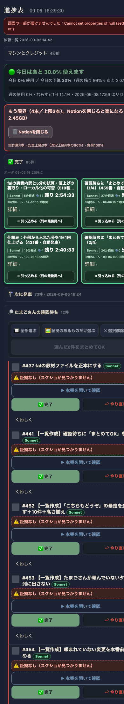
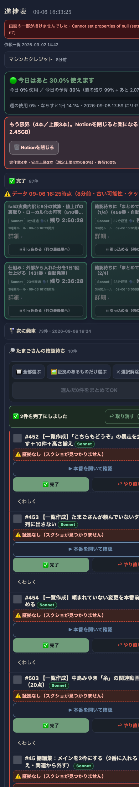

共有資料の一覧 ／ 確認ページ #460 確認待ちに「まとめてOK」を付ける（459番の続き・重複防止の確認）
#460 確認待ちに「まとめてOK」を付ける（459番の続き・重複防止の確認）
2026-09-06 実装・main合流・本番(GitHub Pages)反映まで実測確認
459番(1/4)が①各行のチェックボックス ②「全部選ぶ」「証拠のあるものだけ選ぶ」 ③1回の通信でまとめて完了 ④押した瞬間に画面から消える(楽観的更新) ⑤直後10秒だけ取り消しバナー ⑥赤(証拠なし・URL不通)はチェックボックス自体を無効化 の全てを実装しmain合流・本番反映まで完了済みだった。460番(2/4)は同じ依頼の重複バッチだったため、新規実装はせず本番での動作を独立に再検証した。ローカルにmainと同じコードのコピーを置き、実際にチェック→クリックのシミュレーションを行った結果を下に示す。
② 数字
12→10件クリックで確認待ちが実際に2件減った
85→87件完了一覧が実際に2件増えた
200本番(GitHub Pages)のHTTPステータス
③ 前と後（実データでのスクリーンショット）
クリック前：確認待ち12件・まとめてOK未選択
2件選択してクリック後：確認待ち10件に減り、取り消しバナーが出た
④ 押せるリンク
⑤ 何をどう確かめたか
| 確認項目 | 結果 |
|---|
| 行にチェックボックスがある(実機DOMで確認) | yes |
| 2件選択→まとめてOKボタンが有効化される | yes |
| クリック直後、選んだ2件が確認待ちから消える(楽観的更新) | yes |
| クリック直後「2件を完了にしました／取り消す」バナーが出る | yes |
| 証拠なしの行はチェックボックスが無効(disabled)で選べない | yes |
| 中継所(command_ingest.py)がカンマ区切りの複数番号を受け付ける | yes |